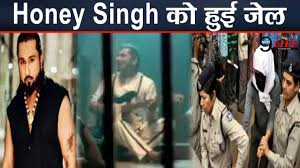

क्या "Famous" कराएगा हनी सिंह का कमबैक?

हीरदेश सिंह, जिन्हें यो यो हनी सिंह के नाम से जाना जाता है, भारतीय संगीत के सबसे चर्चित और विवादित चेहरों में से एक हैं। लंबे समय तक विवादों और गायब रहने के बाद, हनी सिंह अब फिर से सुर्खियों में हैं। इस बार वजह है उनकी आगामी डॉक्यूमेंट्री "Famous", जिसका ट्रेलर हाल ही में यूट्यूब पर रिलीज हुआ। नेटफ्लिक्स यह डॉक्यूमेंट्री 20 दिसंबर को रिलीज करने जा रहा है, जो हनी सिंह की जीवन कहानी, उनके उतार-चढ़ाव और विवादों को दुनिया के सामने लाएगी।
ब्लूटूथ किंग से विवादों तक का सफर
2010 से 2012 तक हनी सिंह का भारतीय संगीत जगत में दबदबा था। उनके गाने हर पार्टी और फोन पर बजते थे, और वे "ब्लूटूथ किंग" के नाम से मशहूर हो गए। लेकिन उनका जीवन एक सांप-सीढ़ी के खेल जैसा रहा। जिस ऊंचाई पर उन्होंने अपना करियर पहुंचाया था, वहां से वे अचानक नीचे गिर गए।
उनकी सफलता के साथ-साथ विवाद भी बढ़ते गए। उनकी लाइफस्टाइल, गानों के बोल और कई अन्य घटनाओं ने उन्हें लगातार सुर्खियों में रखा। अचानक, वे गायब हो गए, और इसने उनके फैंस के बीच कई सवाल खड़े कर दिए। गायब होने के पीछे मानसिक स्वास्थ्य और अन्य विवादों की बातें सामने आईं।
विवादों का पीछा नहीं छोड़ता
हनी सिंह की वापसी के बाद, उनके गाने फिर से लोकप्रिय होने लगे, और फैंस ने उनका समर्थन किया। लेकिन विवाद उनका पीछा छोड़ने को तैयार नहीं। इस बार मामला उनके किसी करीबी सहयोगी के साथ हुआ, जिससे दुश्मनी की खबरें चर्चा में आ गईं। जैसा कि कहा जाता है, "सबसे बड़ा दुश्मन वही हो सकता है जो कभी आपका सबसे गहरा दोस्त रहा हो।"
हनी सिंह के गायब होने के समय बादशाह ने अपने संगीत करियर पर ध्यान दिया और धीरे-धीरे उनकी लोकप्रियता भी बढ़ी। उनकी सफलता ने दोनों कलाकारों के बीच दोस्ती में खटास पैदा कर दी।
"Famous" से क्या उम्मीदें हैं?
नेटफ्लिक्स की डॉक्यूमेंट्री "Famous" हनी सिंह के जीवन के उन पहलुओं को उजागर करेगी, जिनके बारे में उनके प्रशंसकों को कम जानकारी है। यह डॉक्यूमेंट्री यह बताएगी कि गायब होने के दौरान हनी सिंह ने किन मानसिक, शारीरिक और व्यक्तिगत चुनौतियों का सामना किया।
हनी सिंह ने हाल ही में अपने नए एल्बम "Glory" के जरिए फैंस को अपने पुराने अंदाज की झलक दी है। उनके गाने फिर से ट्रेंड कर रहे हैं, और लोग उन्हें उसी प्यार से स्वीकार रहे हैं।
क्या यह हनी सिंह का असली कमबैक होगा?
"Famous" से हनी सिंह का असली व्यक्तित्व, उनके संघर्ष, और उनके जीवन की अनसुनी कहानियां सामने आएंगी। यह डॉक्यूमेंट्री उनके करियर को एक नया मोड़ दे सकती है। फैंस और आलोचक इस डॉक्यूमेंट्री का बेसब्री से इंतजार कर रहे हैं। आशा है कि "Famous" के जरिए हनी सिंह को वह पहचान मिलेगी, जिसके वे हकदार हैं, और उनका "कॉमेबैक" भारतीय संगीत जगत के लिए एक नई प्रेरणा बनकर उभरेगा।